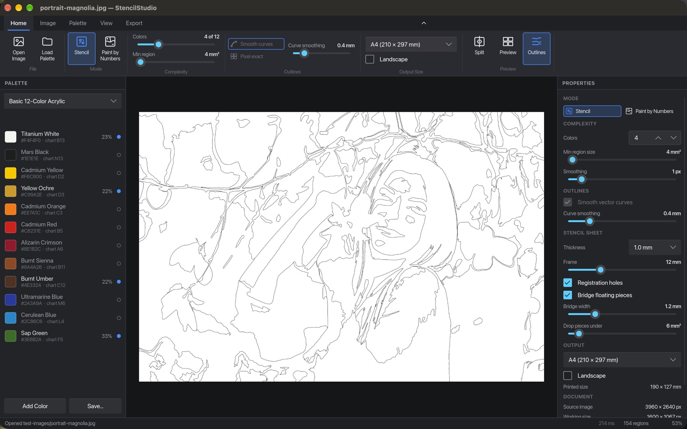
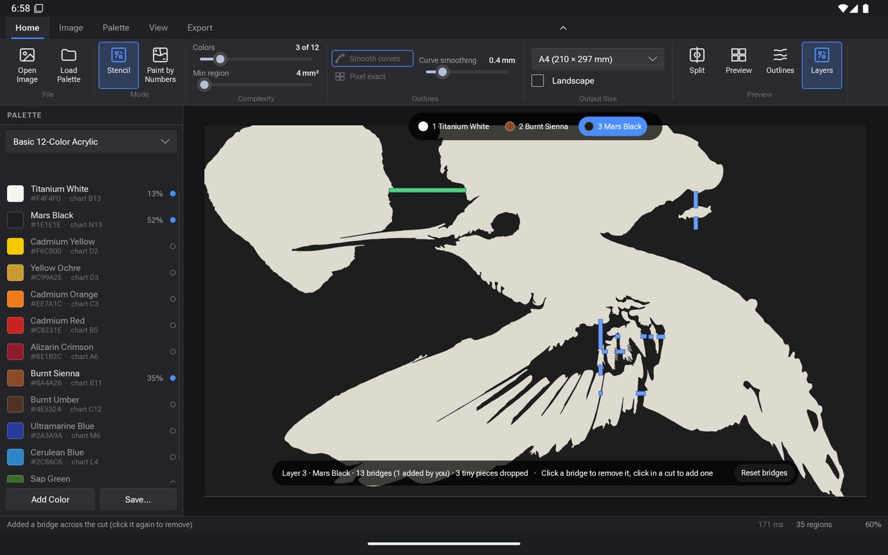

Fewer colours. The right ones.
Choose how many colours to use and StencilStudio picks the best subset of your palette, then tells you how much of the picture each one covers.
- Vivid colours count more, so a red subject stays red instead of collapsing into a safe brown.
- Focus on subject favours sharp, in-focus areas, so a blurry background doesn't steal the colours.
- Minimum region size in millimetres at your paper size, so nothing is too small to cut or paint.


One sheet per colour. Ready to cut.
Export each layer for a laser or vinyl cutter, a CNC, or a 3D printer. Stack them, push pins through the registration holes, and paint your way up from the lightest colour.
- Shared outlines: each border is smoothed once and used by both sides, so there are no slivers between layers.
- Bridges keep the centre of an “O” or a pupil from falling out. Tiny pieces are dropped automatically.
- Frame and four registration holes in the same place on every sheet.
See the sheet. Fix it with a tap.
The Layers view shows each stencil exactly as it will be cut. Automatic bridges are blue, bridges you add are green, and anything still floating is red.
- Click a bridge to remove it, or click inside a cut to add one. It works with a finger too.
- Exports match the screen, because edits are stored in millimetres on the sheet.
- Undo any edit, or reset a layer back to automatic.

The subject gets every colour.
One tap separates the subject from its background. All of your colours go to the bird, not the bokeh, and the background becomes one flat area that is never cut as a layer.
- Preview on white, black, one of three recommended paints from your palette, or any custom colour.
- Apple Vision on macOS 14+, the same subject lifting Photos uses. Elsewhere a bundled 4.6 MB on-device model.
- Edges snap to the photo at full resolution, and exports use the same detection.
A four-page kit, printed in one click.
Export a PDF on your chosen paper size. Every area is numbered at the point deepest inside the shape, sized to fit.
- 1 · Outlines to paint on, with no numbers.
- 2 · Finished picture as your reference.
- 3 · Numbered outlines, lightest colour first.
- 4 · Colour key with an empty test box beside each colour, so you can dab your paint and check the match before you start.


Paint on paper isn't paint on screen.
Print the manual colour chart, hold your dried paint swatches next to it, and type the closest patch code. Or fill in the scan sheet, photograph it, and import the colours.
- Manual chart: 208 patches in a grid, matched against the printout instead of your screen.
- Scan import accepts a photo, a scanner's PDF, or the camera on Android. Rotation, perspective and colour casts are corrected.
- Review before you apply: see old versus read colour for every box.